ImageGen not accepted
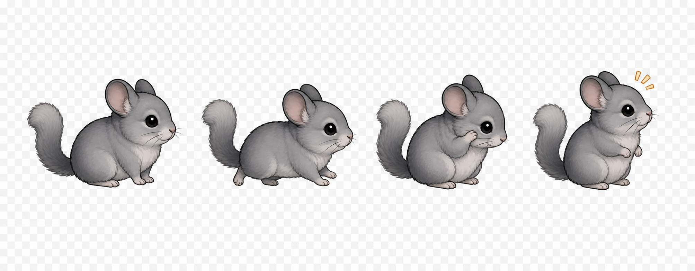
4ポーズは揃ったが、チェッカー背景が焼き込まれ、右端にオレンジの記号が混入。ポーズ案としては使えるが、そのまま accepted にはできない。
Chinchilla set00 の 62フレームについて、動きの生成適性、ImageGen / Flow / Nano Banana 2 / Nano Banana Pro の使い分け、現在の QA 注意点を整理したレビュー用ページです。

4ポーズは揃ったが、チェッカー背景が焼き込まれ、右端にオレンジの記号が混入。ポーズ案としては使えるが、そのまま accepted にはできない。
想定用途は walk / scurry / turn の16セル案出し。実画像が取れたら、同じ4ポーズと16セルで pinhole / face fail / style drift を採点する。
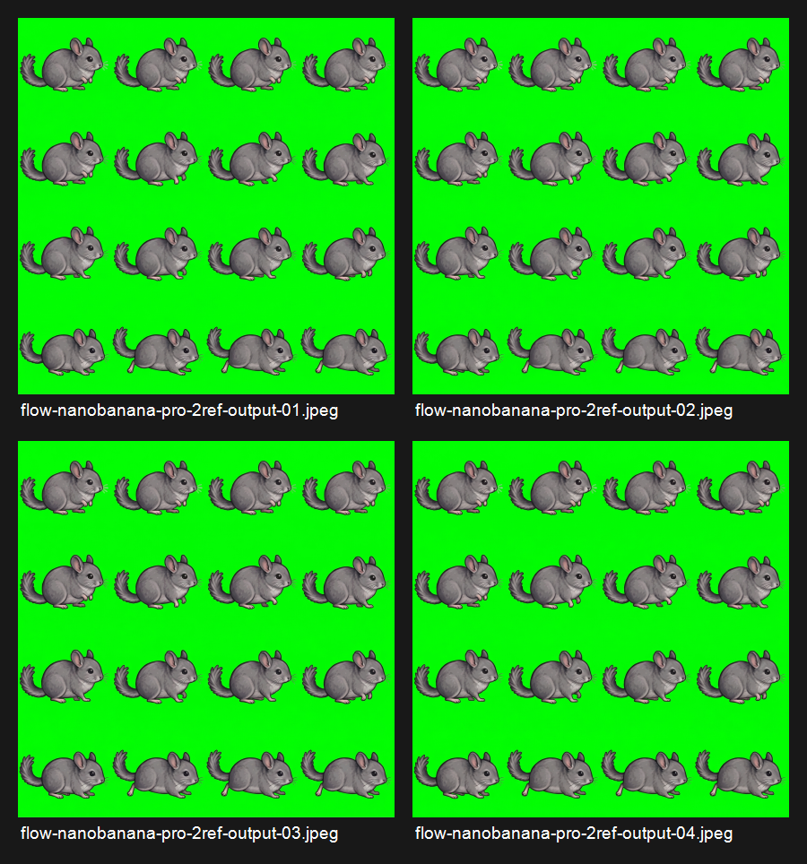
Google Flow / Nano Banana Pro / 1:1 square / 2K x4。`style-anchors.png` と `grid-seed.png` を参照。顔と絵柄は安定したが、16セルのほとんどが同じポーズで、元manifest parseは0/16。
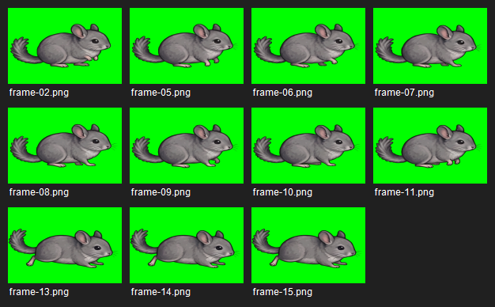
512px実グリッドに合わせ、緑優勢ピクセルを純緑化した後の候補01。残Rejectは disconnected components と chroma pinholes。accepted-frame gateは未通過。
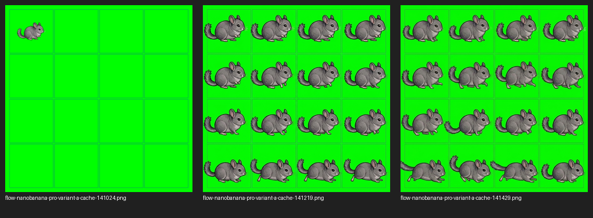
Variant A used explicit per-cell limb deltas. Pose variation improved, but the visible grid seed was still drawn into the output. This is GUIDE_INK, so the sheet is not usable as accepted source.
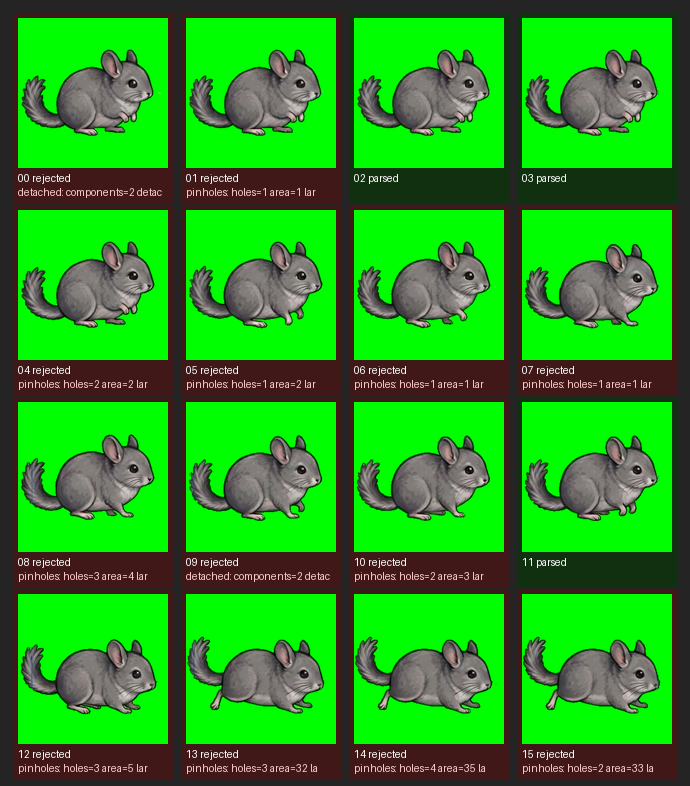
After green-only diagnostic normalization, only 3 of 16 cells parsed. Most rejects were chroma pinholes or detached alpha. This confirms MAT_PINHOLE remains a blocker.
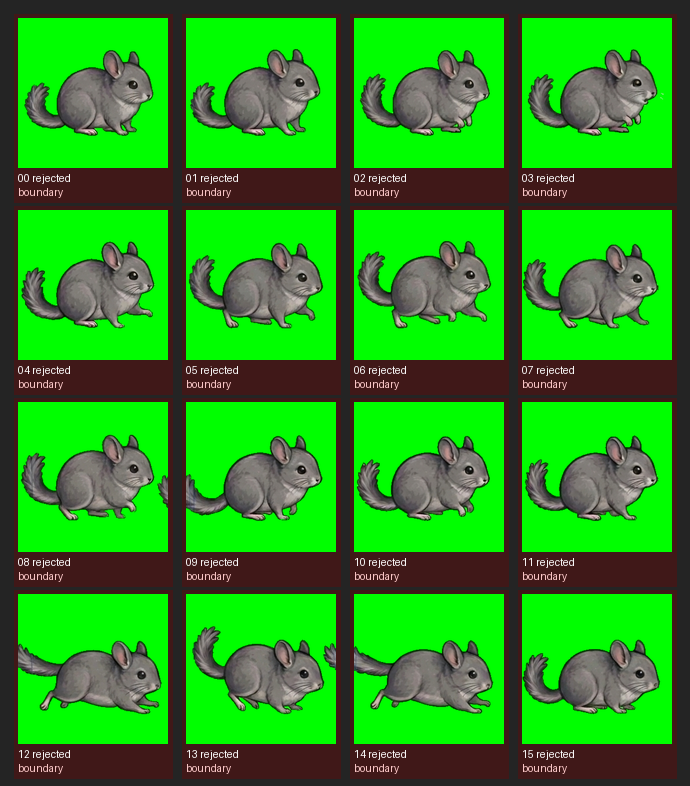
The second recovered output has better low-scurry variation, but fixed-cell parsing still rejects every cell because boundary residue remains. Next attempt should remove the visible grid guide or downgrade to smaller/independent output.
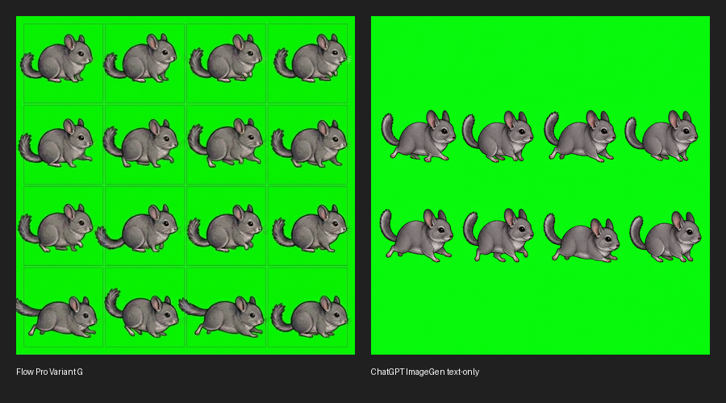
Flow Pro ignored the 8-frame request and returned a visible-line 4x4 sheet. ChatGPT ImageGen produced 8 separated animals in a clean 2x4 arrangement, but text-only output still failed fixed-cell parsing.
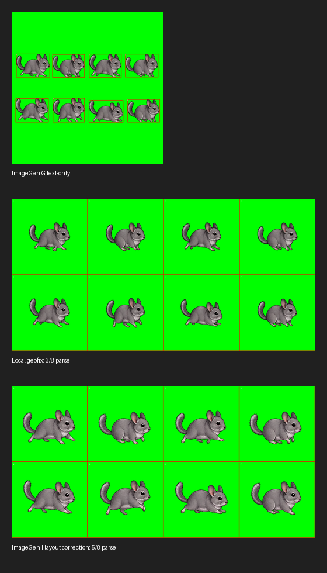
After the user-proposed layout correction pass, diagnostic fixed-cell parse improved to 5/8. Remaining failures are matte pinholes, not cell placement. Promising, but still review-only.
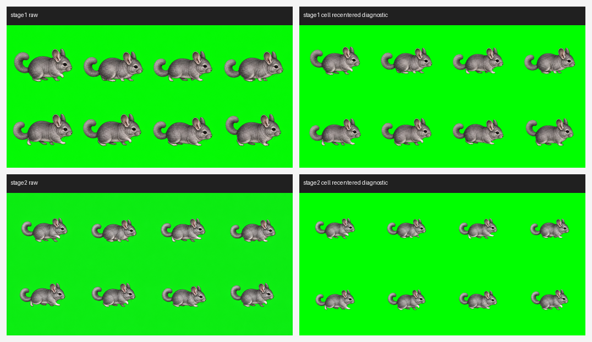
A fresh chinchilla run produced 8 separated components. The stricter layout pass reached 7/8 after green normalization; the only remaining parse reject is a 1px pinhole. Layout is close, but art style and motion deltas still need another loop.
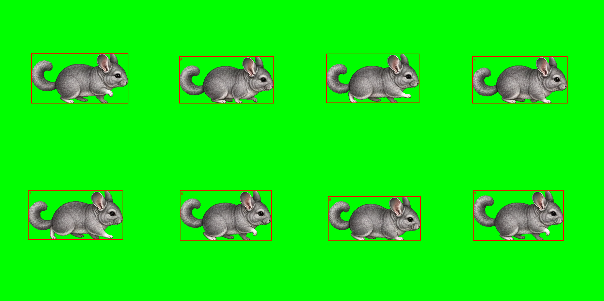
Component detection found exactly 8 large animal components with no large external debris. The blocker is no longer cell count; it is pure-green matte quality, one pinhole, sprite style, and stronger walk-pose separation.
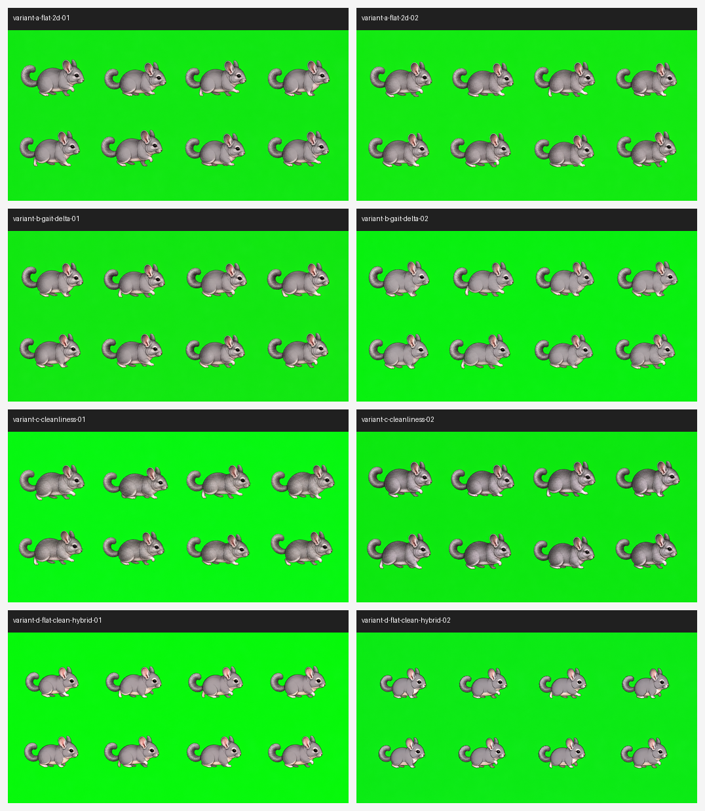
After ChatGPT Pro prompt consultation, A/B/C/D were generated twice. C, the extraction-cleanliness prompt, reached green-normalized 8/8 on both samples. B reached 8/8 once and gives stronger gait deltas. A looks flatter but parses 6-7/8. D looks closest visually but drops to 4-6/8.
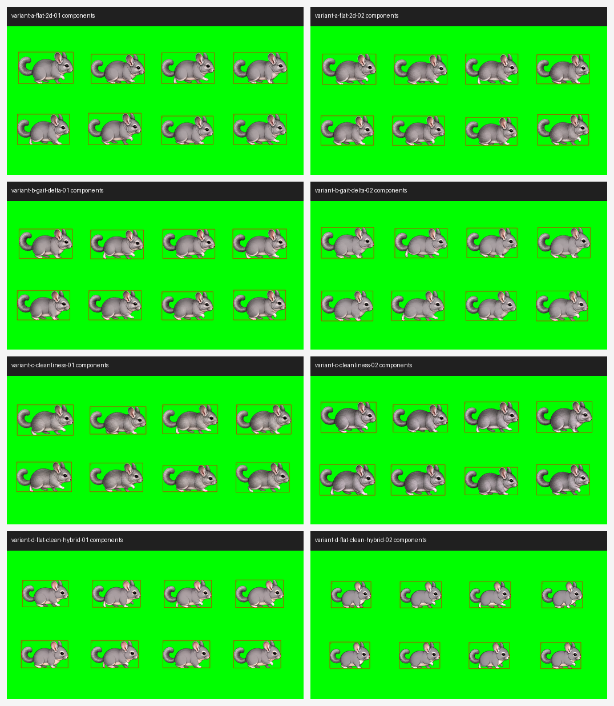
All eight samples produced exactly 8 large animal components. The remaining reproducibility problem is not count or layout; it is parser-pure green, pinholes, and the tradeoff between flatter sprite style and matte stability.
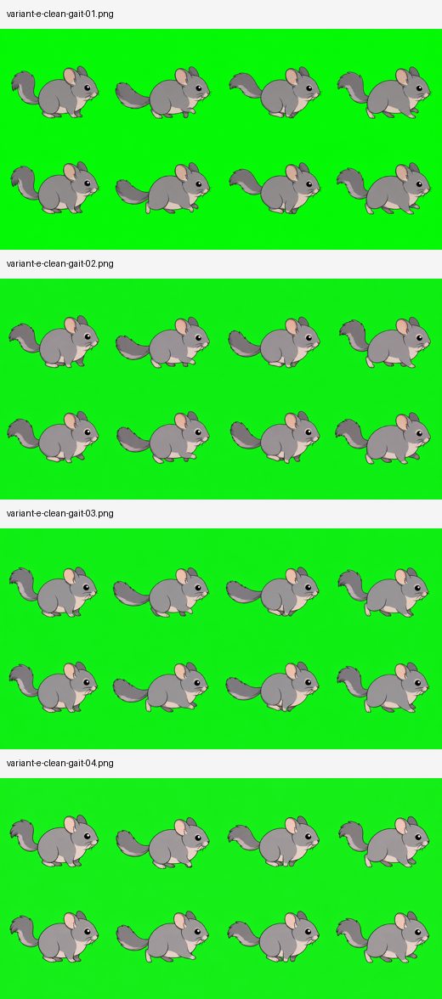
E added modest gait wording to the clean C prompt. All four samples kept 8 visible chinchillas, but green-normalized parse fell to 3/8, 5/8, 5/8, and 3/8. The gait wording increased belly, foot, and tail pinholes.
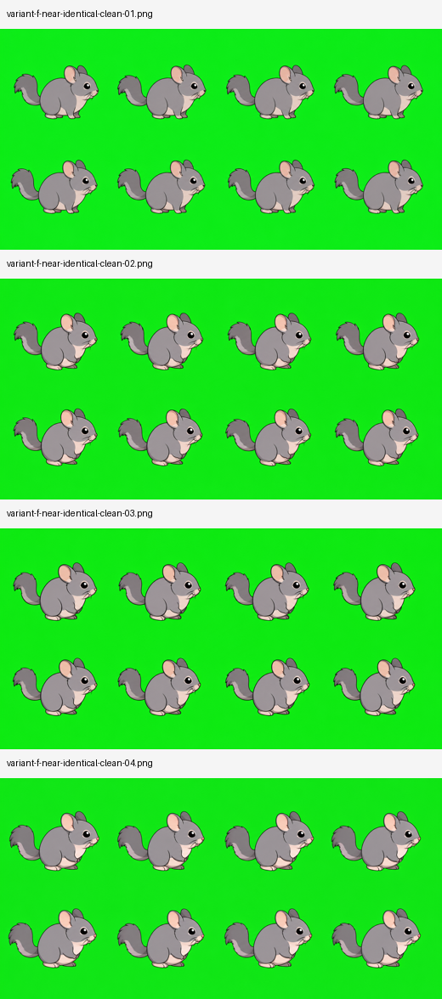
F removed frame-by-frame gait instructions. The faces stayed coherent, but output became near-static and sometimes upright. Diagnostic parse did not recover to C-level stability: 7/8, 5/8, 5/8, and one fixed-cell layout failure.
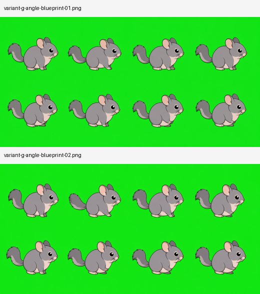
Angle-table wording gave some controlled foot/tail variation, but fixed-cell placement still failed before local recentering. Recentered diagnostics reached 7/8 and 8/8, so this is useful as a motion-design aid, not an accepted-frame shortcut.
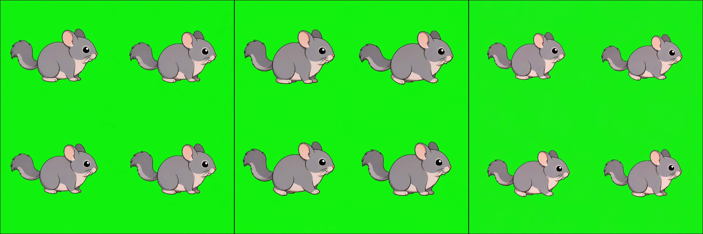
After ChatGPT and Gemini text-only prompt review, the batch was reduced to four frames. H1/H2 both produced exactly four chinchillas and parsed 3/4 after green normalization; raw parse stayed 0/4 because the generated green was not parser-pure. H-next made the sprites smaller, but parse dropped to 2/4 from extra 1px pinholes.
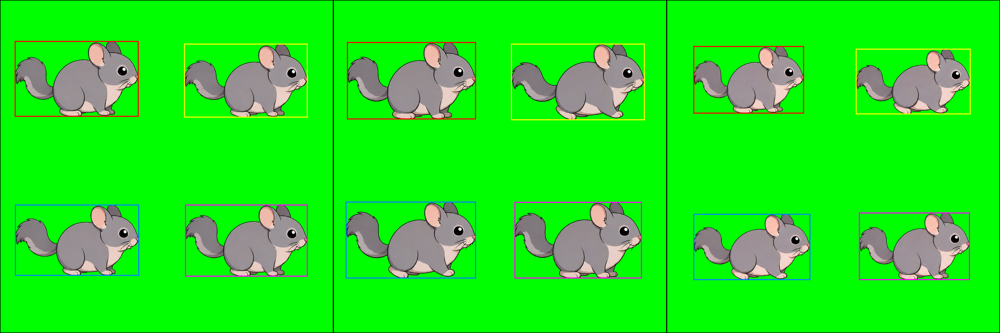
All three run06 samples have four primary animal components with no large detached component. The current blocker is matte quality: one or two tiny chroma pinholes per sheet, plus a still-illustrative style that is not yet DeguDesktop-equivalent.
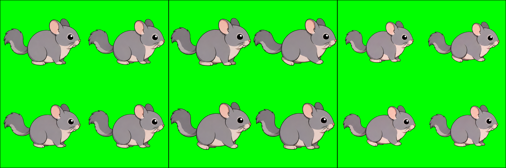
Local recentering did not fix pinholes: H1/H2 stayed 3/4 and H-next stayed 2/4. Use 4-frame sheets only for review of layout, family, and rough pose direction; accepted assets still need the one-frame PNG gate.
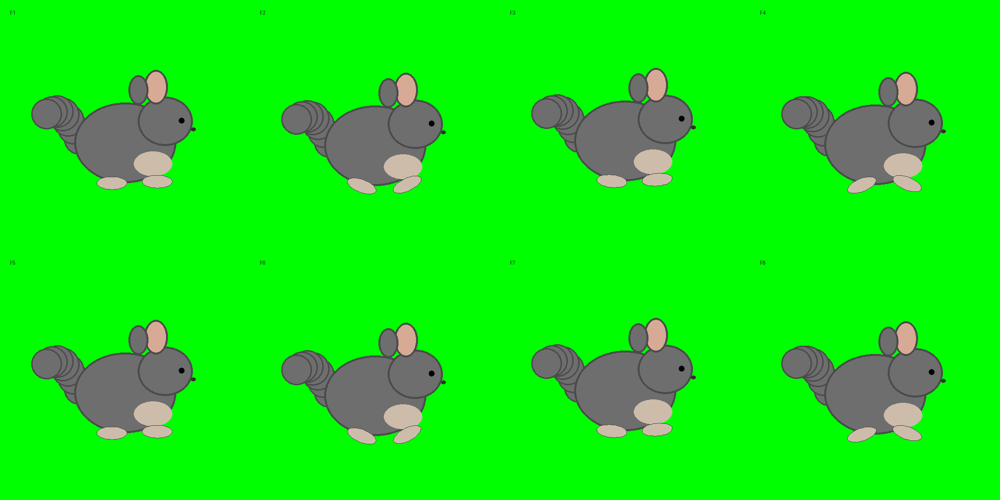
The next flow asks each species which body parts may move before prompting. Bone-only and silhouette-only guides help define angles, but visible guides should not be uploaded by default because labels and lines can be copied into generated art.
下の表はこのシートを 1フレームずつ切って表示しています。QA注意は現在のローカル artifact audit からの判定です。
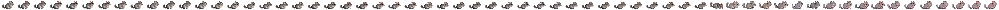
| Frame | Preview | Motion intent | Can generate appropriate motion? | Best generator | Flow role | QA / anchor status |
|---|